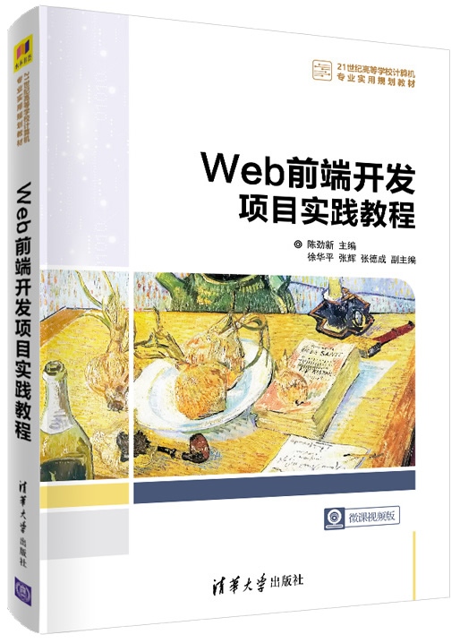

首页 > 书籍下载
《Web前端开发项目实践教程》PDF下载（高清完整版）
|  | 作者：陈劲新、徐华平、张辉、张德成 |
| 出版时间：2020年10月01日 | |
| 出版社： 清华大学出版社 | |
| ISBN：9787302563495 | |
| 总页数：316 | |
| 总字数：48.1W |
这是一本介绍 Web 前端开发技术理念的书，以项目为导向，在项目实践过程中讲解前端开发的技术和策略。
这里提供的是《《Web前端开发项目实践教程》的高清 PDF 下载，内容完整，附带目录标签。
本书想对于其他教材类书籍，主要特色体现在以下三个方面：
1）项目驱动
以 Web 前端三大核心技术为知识主线，以项目需求重构知识体系，在实践中强化对知识点的理解和掌握。2）思政特色
融入职业素养、传统文化等思政内容，使读者在潜移默化中树立正确的职业理念和积极的人生态度。3）资源丰富
配有 SPOC 课程、项目案例的素材及源文件、重难点对应的微视频及项目拓展训练等资源。作为一名 Web 前端开发的从业人员，在学习方法上给初学者一些建议，学习此书除了浏览在线课程以外，还要根据书中的项目多去实践，实践中出现问题、解决问题，才能更高效的提高我们的项目开发技能。
书籍目录
- 模块一 Web前端开发基本认识
- 项目1.1“走进Web前端开发”网站“欢迎页”设计
- 项目1.2“走进Web前端开发”网站首页设计
- 模块二 文本类网页
- 项目2.1“走进Web前端开发”网站“职业认识”页面设计
- 项目2.2“走进Web前端开发”网站“核心概念”页面设计
- 模块三 图文类网页
- 项目3.1“盐城文化风情”网站首页设计
- 项目3.2“图说我们盐城”页面设计
- 模块四 网页布局
- 项目4.1“人民铁军”网站首页设计
- 项目4.2“人民铁军”网站“铁军由来”页面设计
- 项目4.3“人民铁军”网站“战斗历程”页面设计
- 模块五 表单页面
- 项目5.1“走进Web前端开发”网站“登录”表单设计
- 项目5.2“走进Web前端开发”网站“联系我们”表单设计
- 模块六 音视频页面
- 项目6.1“中国淮剧”网站“流派艺术”页面设计
- 项目62“中国淮剧”网站“经典剧目”页面设计
- 模块七 响应式网页布局
- 项目7.1“课程学习汇报交流”网站首页设计
- 项目7.2“中国淮剧”网站首页Bootstrap重构
书籍下载
一键登录，免费下载完整版 PDF，文件名称：《Web前端开发项目实践教程》.pdf